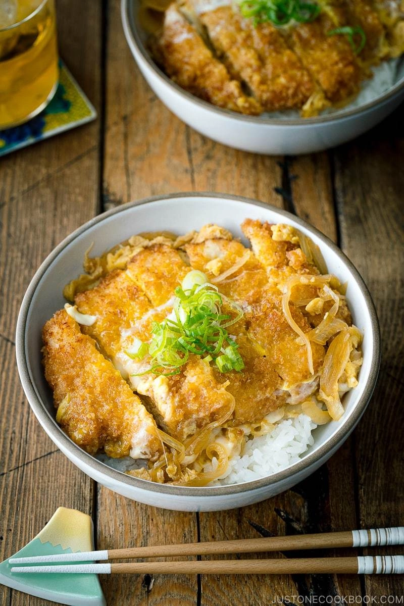

Katsudon

A savory pork culet served with white rice
Katsudon is a staple Japanese comfort food. It consists of a pork cutlet (tonkatsu) on top of a bed of white rice, topped with an egg and onions.
This combination of ingredients leads to a delightfully savory experience, where the pork melts in your mouth while blending with all the other fixings.
Ingredients:
For Tonkatsu:
- 1 cup panko
- 1 tbsp vegetable oil
- 2 pieces boneless pork loin chops
- 1 tsp salt
- Black pepper
- 1-2 tbsp flour
- 1 egg
For Katsudon:
- 1/2 onion
- 2 large eggs
- 2 servings cooked Japanese short-grain rice
For Katsudon Sauce
- 1 cup dashi
- 2 tbsp sake
- 2 tbsp mirin
- 2 tbsp soy sauce
- 2 tsp sugar
Cooking Instructions:
- Gather ingredients and preheat oven to 400ºF
- Combino panko and oil in a frying pan and toast
over medium until golden brown. Transfer to bowl and cool.
- Cut onions into thin slices
- Remove the extra fat on the pork.
- Pound the meat, then mold the meat back into its original shape.
- Sprinkle salt and pepper onto meat.
- Dredge each pork piece in bowl of flour to coat completely.
Pat off the excess flour.
- Beat an egg in a bowl, and coat the pork with the egg.
Then coat the pork with the toasted panko. Press the
pankop flakes on to make sure they adhere to the pork.
- Place the pork on a baking sheet, bake for 20 minutes or until
the pork is no longer pink inside.
- Combine sauce ingredients in a bowl.
- Put half the onion slices into an oyakudon pan, pour 1/2 cup of
katsudon sauce to cover them. Bring the sauce and onions to a boil.
Lower the meat to medium and cook until onion slices are translucent
(4-5 minutes).
- Put tonktasu in pan, turn the heat to medium high. Pour a
beaten egg over tonkatsu evenly and cover with the lid.
- Cook until the egg is half cooked, about 30 seconds, turn off
the heat.
- Place tonkatsu on top of a bowl of rice. Pour excess sauce,
egg, and onions on it. Serve.